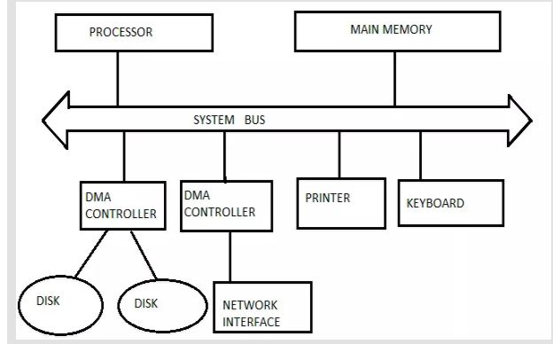

- Both interrupt-driven Input/output and programmed Input/output requires involvement of CPU for data transfer. But when cpu involves in data tranfer, it uses system bus twice
1)during memory to CPU
2)and then CPU to I/O Devices.
- This reduces speed but DMA increases speed by eliminating role of CPU.
- In DMA data transfer, data is directly transfered from memory to I/O devices.
- The DMA module transfers the request block byte by byte directly to the memory without the intervention of CPU.
- The interrupt signals are send at the time of data transfer to communicate with memory and i/o devices.
- DMA Data Transfer modes :
- DMA Block(Burst) Transfer mode
- Cycle Stealing mode
- Transperent DMA mode
- DMA data transfer bus sructure

- DMA Block Transfer mode:An entire block of data is transferred in one contiguous sequence.
Once the DMA controller is granted access to the system bus by the CPU, it transfers all bytes of data in the data block before releasing control of the system buses back to the CPU, but renders the CPU inactive for relatively long periods of time.
The mode is also called "Burst Transfer Mode". It is also used to stop unnecessary data.
- Cycle Stealing mode :A read or write signal is generated by the DMAC, and the I/O device either generates or latches the data.
The DMAC effectively steals cycles from the processor in order to transfer the byte, so single byte transfer is also known as cycle stealing.
In the cycle stealing mode, the DMA controller obtains access to the system bus the same way as in burst mode,
using BR (Bus Request) and BG (Bus Grant) signals, which are the two signals controlling the interface between the CPU and the DMA controller.
Cycle stealing mode is useful for controllers that monitor data in real time.
- Transperent DMA mode : Transparent mode takes the most time to transfer a block of data, yet it is also the most efficient mode in terms of overall system performance.
In transparent mode, the DMA controller transfers data only when the CPU is performing operations that do not use the system buses.
The primary advantage of transparent mode is that the CPU never stops executing its programs and the DMA transfer is free in terms of time,
while the disadvantage is that the hardware needs to determine when the CPU is not using the system buses, which can be complex.
Naturally, the data transfer by the DMAC must be completed before the processor starts.